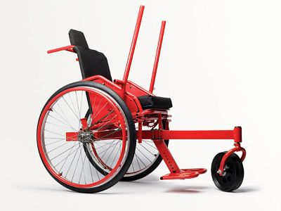

Wheel Chair Controller
Abstract
The purpose of this project is to design and adapt a drive system to a manual wheelchair for a child with cerebral palsy like symptoms. Traditional motorized wheelchairs require the use of fine motor control which our child does not have.
Team Name
Reinventing the Wheel...Chair
Team Members
- Adam Porche, Matthew Dean, Kurtis Curran, Brittney Schwarz, Khaled Mahmoud
With the help of:
- Rene Canfield (Therapist),The Machine Shop Workers, Charles and April (Child's Parents), Dr. Canfield
Problem Statement/Overview of the need
The child had a traumatic brain injury that inhibits his fine motor control skills.The family would like to give the child a sense of independence. Traditional motorized wheelchairs require fine motor control to operate, which he does not have. There are specialized motorized wheelchairs for those without fine motor control, but they are very expensive.
Design Specifications
Adjustable Headrest: Must have a head rest that provides anterior, posterior, and lateral support of the head and neck, preferably with swing-out adjustable arms.
Foot Rest: Must have foot rest without foot restraints so the legs and feet do not drag on the ground.
Harness: Must have an adjustable harness so the child does not fall out of the wheelchair.
Ease of Use: Must be designed so that the child is able to move forward, left, and right without difficulty.
Safety: All small spaces that hands and fingers can fit in need to be covered and closed off to prevent the child from getting his hand stuck in any place of the wheelchair. The design possibly needs wheel covers to ensure hands and fingers cannot get caught in the wheel spokes. Also, brakes should be able to be operated by both user and guardian.
Portability: Design must maintain the portability of a wheelchair.
Background research
AMOS Wheelchair: 
- The AMOS wheelchair is not readily available and lacks the type of control input and ergonomics required.
https://www.ted.com/talks/amos_winter_the_cheap_all_terrain_wheelchair
- Kits to turn manual wheelchairs into motorized electric wheelchairs exist but are very expensive and lack the type of control mechanism needed.
Conceptual Design
- For our conceptual design process, we began researching electric wheelchairs and how to modify those to fit our child's needs. Upon meeting the child's family and therapist, we began to develop parameters for the project and research wheelchair options without motors as well.
Freewheel Design
- The Freewheel Design incorporates a freewheel from a bicycle that allows the user to use their arms as propulsion.
- This design will utilize a lap bar as the mechanism to control the wheelchair. The lap bar will allow the child to operate each design in a way similar to a zero turn lawnmower. Push both bars forward, move forward. Push the left/right bar forward independently, rotate left/right.
(What parents are envisioning)
Reverse Tricycle Design
- The Reverse Tricycle Design will be propelled by a third wheel in the rear. As the user pushes the T-Bar it will propel the wheelchair. Pulling back on theT-Bar resets the drive using a freewheel mechanism.
- This design also utilizes the freewheel mechanism, but only uses one as opposed to the Freewheel Design which uses two.
- The user turns the wheelchair by simply turning the T-Bar in the direction they wish to go, and the real drive wheel turns.
Hub Motor Design
- A Hub Motor would be mounted to each wheel and be controlled by a micro-controller such as an Arduino, etc.
- This design would utilize a joystick the child could operate with one finger.
- The design excels in ease of use but is very expensive to manufacture and maintain.
Evaluate Candidates
Scale from 1-5. 1-worst 5-best
| Concept | Foot Rest | Ease of Repair | Ease of Assembly | Safety | Price | Ease of Use | Stimulation | Average |
|---|---|---|---|---|---|---|---|---|
| Freewheel | 5 | 5 | 5 | 3.5 | 4 | 4 | 5 | 4.5 |
| Reverse Tricycle | 4 | 3 | 3.5 | 5 | 4 | 4.5 | 4 | 4 |
| Hub Motor | 5 | 2 | 1.5 | 5 | 1 | 5 | 3 | 3.2 |
Detailed Design
Our team has selected the Freewheel Design Concept based on its ability to be easily assembled, transported, manufactured and for the stimulation it provides to the child.
Detailed description of selected design
The Freewheel Design will utilize a freewheel mechanism and aluminum tubing to provide an alternative drive method to a traditional wheelchair. Additionally, there will be an aluminum plate covered in grip tape that will be used as a support for the user's feet. Each wheel has six attachment points for a metal hand ring, traditionally used to propel the wheel chair. Our design will replace this metal hand ring with an aluminum ring with six spokes welded to it. The spokes will be welded to a center point on the rim that contains a freewheel that is attached to a telescoping crank arm. An additional benefit to this design is the entire system can be unscrewed with the six bolts, reverting the chair back to a traditional manual wheelchair that is easily foldable and transportable.
Analysis
Our team focused on three analyses related to the motion of the user's arms and forces required to set the chair in motion on different surfaces.
Force Required to Move Wheelchair on Various Surfaces (Engineering Analysis 1)
Mechanism Model (Engineering Analysis 2 and 3)
https://drive.google.com/file/d/0B2qpt0nsuhdGOEd4RmxiQTlSUjA/view?usp=sharing
CAD Drawings

Bill of Materials
The total estimated cost will be $207.03 plus tax and shipping.
Assembly Instructions
Fabrication Process

Testing and implementation
Describe testing, delivery, how used/received by the family
Photos of Completed design
Insert pictures of the final product
Instructions for safe use
Provide a clear summary of safe use for the family. Do not use the device unless supervised by an adult that has been fully understood the safe use of this product.